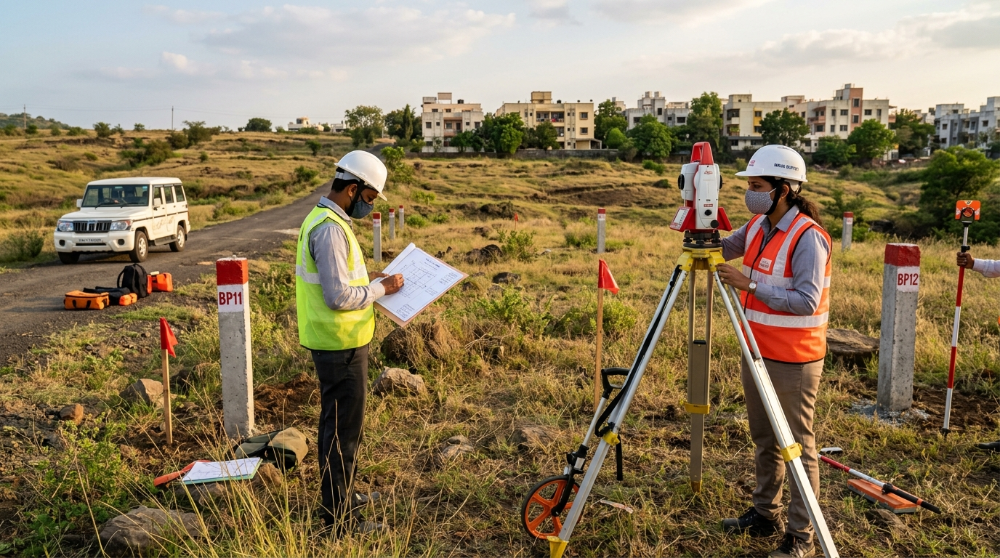

Building a house, developing a residential plot or preparing land for a commercial project involves more than selecting a design and hiring a contractor. Before construction begins, you need a clear understanding of the land’s boundaries, ground levels, existing features and physical conditions.
A land survey before construction helps convert the site’s physical characteristics into measurable information that property owners, architects, civil engineers and contractors can use for planning and design.
For example, a plot may appear level when viewed from the entrance, yet the ground could gradually slope towards the rear boundary. An existing compound wall might not accurately represent the recorded property boundary. A drain, utility line or neighbouring structure could also affect the proposed building layout.
Identifying these conditions before construction helps the project team make better-informed decisions.
This guide explains seven practical land surveying checks to consider before starting construction in India, along with the differences between boundary demarcation and topographic surveying, the survey deliverables you may need, and a checklist to prepare before contacting a surveying provider.
Table of Contents
- 1. Verify the Plot Boundaries and Physical Demarcation
- 2. Understand Existing Ground Levels and Site Slope
- 3. Identify Existing Features and Physical Obstructions
- 4. Assess Drainage Patterns and Water Movement
- 5. Check Access, Road Levels and the Proposed Building Layout
- 6. Select the Right Survey Type and Deliverables
- 7. Coordinate the Survey with the Design and Construction Team
- Difference Between Boundary Demarcation and Topographic Surveying
- Checklist: Before Contacting a Land Surveying Provider
- How Sarate Surveyor Can Support You
- Frequently Asked Questions
1. Verify the Plot Boundaries and Physical Demarcation
The first consideration is understanding where the plot boundaries are intended to lie and how they relate to the physical site.
Before planning excavation, foundation work or compound walls, the property owner should establish whether the proposed construction layout is based on the correct plot limits.
What should you check?
- Available property documents and relevant survey or revenue records.
- The recorded plot dimensions, where documented.
- Existing boundary markers, corner points and compound walls.
- The relationship between the available records and observable site features.
- Any apparent discrepancy between the documented plot and its physical occupation.
Where appropriate, a boundary or plot demarcation survey can help relate available land records to field measurements and identify the positions of boundary points for technical review.
For example, if a plot is described as rectangular in the available documents but an existing wall appears irregular, the discrepancy should be investigated before using that wall as the basis for a construction layout.
Boundary demarcation is not the same as a topographic survey
A boundary or plot demarcation survey focuses on the location of plot limits, boundary points and their relationship to available records and field conditions.
A topographic survey focuses on the physical shape of the land, including ground elevations, slopes, contours and existing natural or man-made features.
These surveys answer different questions. A boundary survey does not automatically provide the detailed elevation information required for site grading, and a topographic survey does not, by itself, establish legal ownership or conclusively resolve a boundary dispute.
2. Understand Existing Ground Levels and Site Slope
The next check is the elevation profile of the plot.
Ground levels influence how an architect or civil engineer approaches building levels, access, grading, retaining structures and drainage. A site that looks relatively flat may still contain elevation differences that matter to the design.
What should you check?
- Existing ground levels at relevant points across the plot.
- High and low areas of the site.
- The direction and extent of the ground slope.
- Differences in elevation between the plot and adjoining access areas.
- The relationship between proposed building levels and existing ground levels.
A level survey or suitable topographic survey can provide elevation information for engineering and construction planning.
Why do site levels matter?
Consider a residential plot where the entrance is higher than the rear portion. The design team may need to assess how the proposed finished floor level relates to the existing ground, how the site should be graded and how surface water will be managed.
Without suitable level information, the design may rely on assumptions that later need to be checked against actual site conditions.
The required level of detail depends on the project. A small, relatively simple plot may need a different survey scope from a sloping site with multiple structures, access constraints or proposed retaining walls.
3. Identify Existing Features and Physical Obstructions
A plot is not simply an area of empty land. Even a vacant site can contain features that affect design, access, excavation and construction planning.
A topographic survey can record relevant existing natural and man-made features within the agreed survey scope.
Features worth considering
Depending on the site, these may include:
- Existing buildings, walls and fences.
- Roads, access tracks and entrance points.
- Drains, channels and visible watercourses.
- Trees and other significant vegetation.
- Poles, visible utility features and surface infrastructure.
- Changes in terrain, embankments and depressions.
- Adjacent structures or features near the proposed construction area.
Not every feature needs to be surveyed on every project. The scope should reflect the intended use of the survey information.
Example: A proposed building near an existing drain
Suppose a developer plans to position a building close to an existing drainage channel. Recording the channel’s position and relevant ground levels can help the engineering team assess the proposed layout and investigate drainage requirements.
However, a visible surface feature does not necessarily reveal the complete underground utility network. Where buried services may affect excavation, arrange appropriate utility detection, records review or specialist investigation separately.
4. Assess Drainage Patterns and Water Movement
Water management should be considered before construction, not only after the building is complete.
Ground elevations and the surrounding site context influence how surface water moves. Low-lying areas, changes in slope, roadside drains and neighbouring land levels may all be relevant to the design.
What should you check?
- Natural high and low points.
- Visible drainage channels and outlets.
- Existing ground slopes near the proposed building.
- The relationship between site levels and adjoining roads or properties.
- Areas where surface water appears to collect, if observable during the site inspection.
- Relevant off-site features that could influence the proposed drainage arrangement.
Elevation data from a suitable topographic survey can support the engineer’s assessment of grading and drainage options.
Example: A plot below the adjoining road
If the road outside a plot is higher than portions of the site, the design team should assess the implications for access, finished floor levels and surface-water management.
A survey provides information about the existing geometry. It does not, on its own, determine the final drainage design or establish the capacity of a drainage system. Those decisions require the appropriate engineering assessment and, where relevant, additional investigations.
5. Check Access, Road Levels and the Proposed Building Layout
The plot must be considered in relation to how people, vehicles and construction equipment will enter and move around the site.
For many projects, the relationship between the plot, the adjoining road and the proposed building footprint is as important as the internal ground levels.
What should you check?
- The location and width of the existing access.
- The adjoining road’s relevant levels and surface features.
- Ground elevations around the proposed entrance.
- Space available for construction access, where relevant.
- Existing walls, trees or other features that could affect the layout.
- The relationship between the surveyed plot and the proposed building footprint.
A survey can provide the measured information needed to assess these conditions and prepare a suitable site layout.
Example: Planning an entrance to a sloping plot
A building plan may show a vehicle entrance connecting directly to the road. If the road level and the plot level differ significantly, the design team may need to review the entrance geometry, internal driveway slope and finished levels.
Surveyed measurements help the team evaluate the actual site rather than relying exclusively on visual estimates.
Where the project requires construction setting-out, confirm whether that work is included in the scope. A topographic survey records existing conditions; construction setting-out transfers approved design positions or levels to the site and is a separate activity unless specifically included.
6. Select the Right Survey Type and Deliverables
One of the most important pre-construction decisions is choosing a survey that answers the project's actual questions.
Requesting a survey without defining its purpose can result in missing information or deliverables that are unsuitable for the design team.
Which survey might your project need?
- Boundary and plot demarcation survey: Consider this when the primary requirement is to examine plot limits, boundary points or the relationship between available land records and field conditions.
- Topographic survey: Consider this when the design team needs information about the site's physical features, ground elevations, terrain and contours.
- Level survey: Consider this when elevation control or level measurements are the primary requirement, such as checking existing levels in relation to a proposed finished floor level.
- Construction setting-out: Consider this when approved building positions, alignments or design levels need to be transferred to the ground. Confirm the scope separately with the surveying provider.
Some projects require more than one survey activity. For example, a residential development on sloping land may need boundary demarcation and topographic mapping before the architect and engineer finalise the layout.
Choose deliverables based on how the data will be used
Discuss the following options with the surveying provider and the design team:
- 2D AutoCAD DWG: Useful when engineers or architects need editable plan geometry and mapped features.
- Contour drawing: Useful for understanding the site's elevation pattern and slope.
- 3D Digital Terrain Model (DTM): Useful when a suitable digital representation of the ground surface is needed for terrain assessment or further design work.
- GIS data or shapefiles: Relevant when the project requires geographic data integration or spatial analysis.
- Survey report and hard copies: May be appropriate for documentation, review or coordination requirements.
These are possible deliverables, not a standard package that every project requires. Confirm the format, coordinate reference system, vertical datum or benchmark information, units, feature coverage and intended use before work begins.
If the project involves detailed earthwork calculations, retaining structures or drainage design, discuss the additional information required with the responsible engineer.
7. Coordinate the Survey with the Design and Construction Team
The final check is making sure that the survey is planned around the project's next decision.
Survey information is most useful when the owner, architect, civil engineer and contractor understand what has been measured, what the drawings represent and which additional checks may still be required.
Before the survey starts
Confirm:
- The exact site location and approximate area.
- The intended purpose of the survey.
- The boundary, topographic or level information required.
- Any available site plans, relevant records or previous surveys.
- The features that must be captured.
- The required drawing formats and reporting details.
- Site access, timing and any practical restrictions.
- Whether setting-out or follow-up measurements are also required.
After receiving the survey
Review the deliverables with the appropriate design professional. Check that the drawings cover the intended area, identify relevant features, state the necessary reference information and answer the questions for which the survey was commissioned.
If the design changes, site conditions are altered or a discrepancy is discovered, determine whether additional measurements or an updated survey are necessary.
A survey supports engineering decisions, but it does not replace architectural design, structural engineering, geotechnical investigation, utility detection, statutory approvals or other project-specific requirements.
What Is the Difference Between Boundary Demarcation and Topographic Surveying?
Although both activities involve measurements on land, their primary purposes are different.
| Consideration | Boundary/Plot Demarcation | Topographic Surveying |
|---|---|---|
| Primary purpose | Examine and mark plot boundaries based on the agreed scope and available records | Map the site's physical features and terrain |
| Main information | Boundary points, plot geometry and relevant record relationships | Ground levels, contours, slopes and existing features |
| Typical use | Plot planning and boundary-related field assessment | Architectural planning, grading and engineering design |
| Key output | Boundary-related plan or demarcation information, as agreed | Topographic drawing, contours and other specified terrain data |
| Important limitation | Does not independently establish ownership or settle legal disputes | Does not independently establish legal boundaries or ownership |
Which one should you choose?
If your main question is, “Where are the plot limits in relation to the available records?”, discuss a boundary or plot demarcation survey.
If your main question is, “What are the ground levels, slopes and existing features that the building design must account for?”, discuss a topographic survey.
If you need answers to both questions, ask whether both activities should be included in the survey scope.
Checklist: Before Contacting a Land Surveying Provider
Use this checklist to organise your requirements before requesting a quotation or project discussion.
Site information
- Exact project location, including village or locality, taluka and district where applicable.
- Approximate plot area and site access details.
- Available site plan, property records or previous survey drawings.
- Information about existing structures, walls, drains or other relevant features.
Survey requirements
- Primary purpose: boundary demarcation, topographic mapping, level survey or another requirement.
- Approximate area to be surveyed and any adjoining area that may need to be included.
- Particular ground levels, contours or physical features required.
- Whether construction setting-out or additional measurements are needed.
Deliverables and coordination
- Required output format, such as 2D DWG, contour drawing, 3D DTM or GIS data.
- Required coordinate reference system, benchmark or vertical datum information, where applicable.
- Intended use of the drawings and any specific requirements from the architect or engineer.
- Expected schedule and practical site-access arrangements.
You do not need to know every technical detail before making an enquiry. Share the information you have and explain what you intend to build. The surveying provider can help clarify the appropriate scope.
How Sarate Surveyor Can Support Pre-Construction Planning
Sarate Surveyor is a land surveying and geospatial services provider based in Pune, Maharashtra, established in 1996.
Its documented service portfolio includes boundary and plot demarcation, topographical mapping and 3D modelling, and surveying support for engineering and infrastructure applications.
Depending on the project scope, relevant capabilities include DGPS/RTK, Total Station and robotic Total Station surveying, as well as auto or digital levelling. Topographic mapping deliverables may include contours, Digital Terrain Models and information about existing natural and man-made features.
For a property owner or development team preparing to build, the first step is to identify the actual requirement: plot demarcation, elevation information, topographic mapping or a combination of these.
Share the project location, approximate area, intended purpose and required deliverables so that the appropriate survey scope can be discussed.
Frequently Asked Questions
Is a land survey necessary before building a house?
Whether a particular survey is legally required depends on the project and applicable rules. From a technical planning perspective, suitable survey information can help the design team understand plot boundaries, existing ground levels, site features and access conditions before finalising the building layout.
Should I get a boundary survey or a topographic survey first?
Start by identifying the information needed for the next design decision. Boundary demarcation addresses plot limits and relevant records; topographic surveying addresses ground levels and physical features. Some projects benefit from both, with the scope and sequence agreed by the relevant professionals.
Can a topographic survey identify property ownership?
No. A topographic survey maps physical terrain and features. It does not independently establish legal ownership. Ownership and disputed boundaries must be addressed through the relevant records, authorities and qualified legal professionals as applicable.
What deliverables should I request?
Depending on the intended use, you may need a 2D AutoCAD drawing, contours, a 3D Digital Terrain Model, GIS data, a report or hard copies. Confirm the required format, reference information and feature coverage with the design team before commissioning the survey.
Can a land survey determine drainage requirements?
A survey can provide ground elevations, slopes and mapped drainage features that support engineering assessment. The final drainage design requires an appropriate engineering evaluation and may require additional information.
What information is needed to request a survey quotation?
Provide the project location, survey type, approximate area or length, purpose and required deliverables if known. Site accessibility, terrain, scope and schedule may also affect the quotation.
Plan Your Next Construction Step with Better Site Information
Before construction begins, establish what you need to know about the land and ensure the survey scope matches the decisions your project team must make.
Planning construction on a plot in Pune or elsewhere in Maharashtra?
Contact Sarate Surveyor